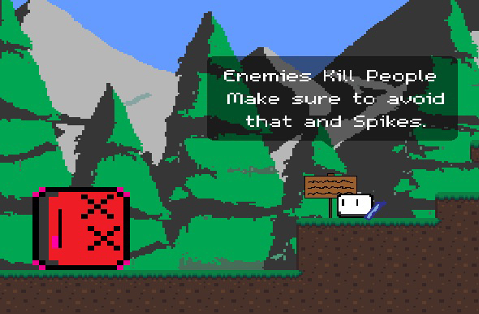

Spring 2022

This Mobile Platformer Game App, was developed using GML and JavaScript. I have always been a big fan of Mario and other platformer games, and as a kid, I always wanted to play Mario on my iPad. Inspired by this, I decided to create my own platformer game for mobile devices.
Mobile Platformer Game App features advanced projectile motion and engaging gameplay. Inspired by my previous Christmas game, I developed this game for mobile platforms. Although currently playable on the computer with PC controls, it was designed for the App Store and is yet to be released.